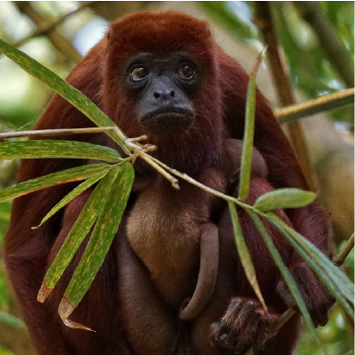
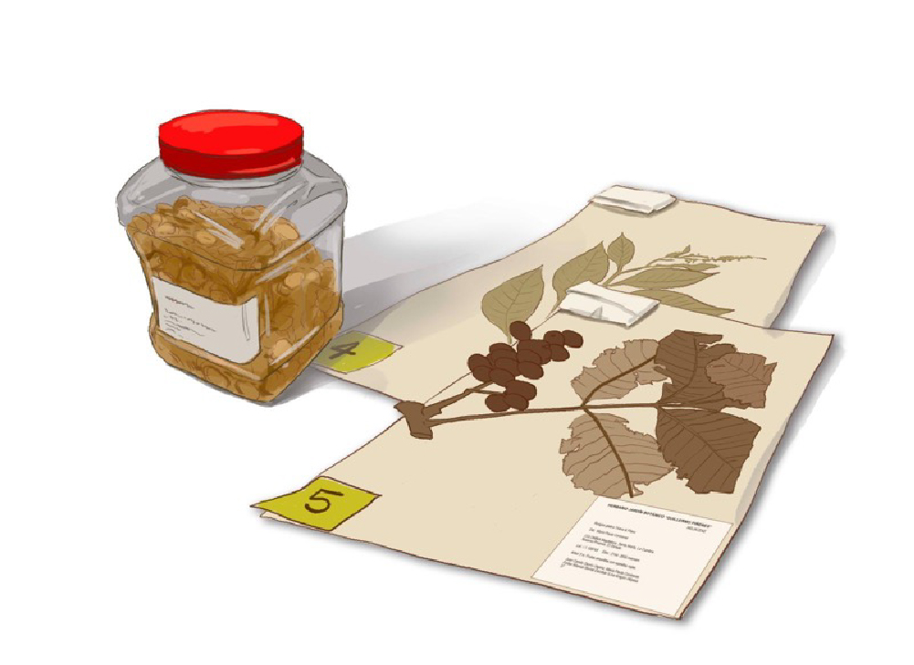

El Jardín Botánico de Cartagena nace gracias a la generosa donación de tierras por parte de María Jiménez de Piñeres, en memoria de su esposo, Guillermo Piñeres. Este acto tuvo como propósito principal preservar el ecosistema de posibles explotaciones. Con el respaldo del Banco de la República, se formalizó la creación de la Fundación Jardín Botánico “Guillermo Piñeres” y se abrió el espacio al público.

